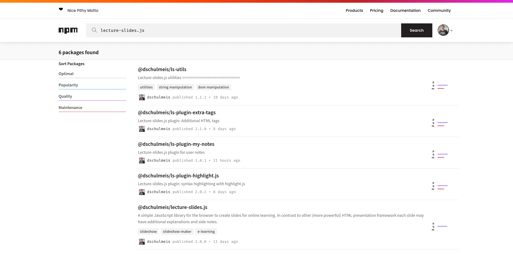

Vorbereitung der Gruppenarbeit
* Gruppeneinteilung vornehmen
* Git-Repositories anlegen
* Vorlagequellcode übernehmen
Einstieg in die Programmierung
* Vorstellung der Beispielanwendung
* Programmieren mit Node.js
* Grundlagen zu Docker
Lernziele
### Beispielanwendung
* Die Architektur der Beispielanwendung verstehen
* Den Aufbau der Quellcodevorlage kennen
### Node.js
* Die Vorteile von Node.js und des Node Package Managers für die Webentwicklung verstehen
* Eigene Node.js-Projekte anlegen und bearbeiten können
* Benötigte Bibliotheken auf npmjs.com suchen und einem Node.js-Projekt hinzufügen können
* Node.js-Projekte mit npm-Skripten lokal starten und bearbeiten können
### Docker
* Die Unterschiede zwsichen Hardware-Virtualisierung und Container-Virtualisierung verstehen
* Typische Befehle zum Starten und Stoppen von Containern kennenlernen
* Zusammenhängende Services mit Docker Compose starten und stoppen
* Netzwerkvirtualisierung, Portweiterleitungen und Service Discovery in Docker verstehen
* Skalierung und Load Balancing in Docker kennen
* Die Funktionsweise eines Dockerfiles zum Bauen eigener Images nachvollziehen können
* Hilfreiche Dokumentationen auf der Webseite von Docker kennen
Gruppeneinteilung vornehmen
Teilen Sie sich untereinander in Dreiergruppen auf und überlegen
Sie, welche Anwendung Sie programmierne wollen. Anschließend erfassen
Sie im Moodleforum einen Eintrag zur Anmeldung der Gruppenarbeit
mit folgenden Inhalten:
* Namen der Gruppenmitglieder
* Kurzbeschreibung geplanten App
Git-Repositories anlegen
Legen Sie wie in der letzten Vorlesung gezeigt in GitHub ein neues
Repository für das Portfolio projekt an und geben Sie allen Gruppenmitgliedern
Änderungsrechte darauf. Anschließend ergänzen Sie den Link auf das Repository
im Moodleforum. Außerdem sollte jeder das Repository bereits auf den eigenen
Rechner klonen.


### Aufgabe
Kopieren Sie nun den Vorlagequellcode in ihr neues Git-Repository,
committen Sie diesen und verteilen Sie ihn über GitHub auf die Rechner aller
Gruppenmitglieder.
[Download-Link](https://dennisschulmeister.github.io/DownGit/#/home?url=https://github.com/DennisSchulmeister/dhbwka-wwi-vertsys-2022-quellcodes/tree/main/Grundger%C3%BCst%20einer%20Single%20Page%20App%20mit%20REST-Backend) {.fw-bold}



* `npm init`: Datei `package.json` im aktuellen Codeverzeichnis neu anlegen
* `npm install`: Abhängige Bibliotheken und Werkzeuge installieren
* `npm update`: Abhängigkeiten auf ihre erlaubte neuste Version aktualisieren
* `npm audit fix`: Abhängigkeiten mit bekannten Sicherheitslücken aktualisieren
* `npm start`: Hauptdatei des Quellcodes ausführen, um die Anwendung zu starten
* `npm run irgendwas`: Ausführen eines in der `package.json` definierten „Run-Skripts”
Öffnen Sie den folgenden Link auf eine Online IDE zum Bearbeiten eines einfachen Node.js-Projekts.
Es öffnet sich eine die GitPod Online IDE, die im Grune genommen einer Browser-Version von Visual
Studio Code entspricht mit dem Quellcode eines einfachen Online-Wörterbuchs. Zusätzlich steht Ihnen
hier eine cloud-gehostete Linux-Umgebung mit typischen Entwicklungswerkzeugen und vor allem auch
Node.js zur Verfügung.
Online IDE: MobiDict Quellcode
{.img-thumbnail img-responsive}
Am unteren Bildschirmrand finden Sie das Terminal. Führen Sie darin folgende Kommandos aus:
* `npm install` zum Installieren aller benötigten Bibliotheken
* `npm start` zum Starten der Anwendung
Am unteren Bildschirmrand sollte nun eine Benachrichtigung erscheinen, dass die Serveranwendung
einen TCP-Port geöffnet hat und Sie fragen, wie Sie damit verfahren wollen. Klicken Sie hier
auf „Open Preview”. Dadurch sollte sich am rechten Bildschirmrand ein Vorschaufenster
mit der Benutzeroberfläche der Webanwendung öffnen. Dort finden Sie dann auch die öffentliche
URL, mit der Sie die Webanwendung in einem neuen Browser-Tab aufrufen können. Erkunden Sie die
Webanwendung ein wenig.
Anschließend beantworten Sie folgende Fragen:
1. Woran erkennt man, dass es sich um ein Node.js-Projekt handelt?
1. Welche Abhängigkeiten besitzt die Anwendung und wo sind sie definiert?
1. Wo befindet sich der **serverseitige** JavaScript-Code der Anwendung?
1. Und wo befindet sich der **clientseitige** JavaScript-Code?
1. Wie wird sichergestellt, dass der Servercode nicht im Browser ausgeführt wird?
Nehmen Sie anschließend eine kleine Änderung an der Datei `server.js` vor,
indem Sie z.B. die Konsolenausgabe ganz am Ende verändern. Sie sollten im
Terminal sehen, dass sich die Anwendung dank `nodemon` dadurch neustartet.
Mit Strg+C können Sie die Anwendung verlassen.


...
...
...
...
* JavaScript-Laufzeitumgebung zur Nutzung von JavaScript außerhalb des Browsers.
* Kapselt die „V8 Engine” von Google Chrome als eigenständiges Programm.
* Dient der traditionell der Entwicklung performanter Serveranwendungen.
* Keine direkte Möglichkeit, die grafische Oberfläche des Betriebssystems zu verwenden.
* Dies ist eher die Aufgabe von Spezialframeworks wie Electron oder Cordova.
Ein Quellcodeverzeichnis wird durch die Datei `package.json` zu einem Node.js-Paket.
Als solches kann es …
* Auf npmjs.com oder eine anderen Registry veröffentlich werden.
* Abhängige Bibliotheken herunterladen und deren Abhängigkeiten auflösen.
* Mit npm-Skripten einfache Aufgaben wie die Ausführung von Werkzeugen automatisieren.
Darüber hinaus gibt es nichts besonderes zu beachten.
Installation mit folgenden Befehlen:
* `npm add name_des_packets`: Als Laufzeitabhängigkeit (Laufzeitbibliotheken usw.)
* `npm add -D name_des_packets`: Als Entwicklungsabhängigkeit (Build-Werkzeuge usw.)
* Eine (relativ) neuartige Laufzeitumgebung für cloudbasierte Serveranwendungen.
* Eine einfache Möglichkeit, Anwendungen in einer virtuellen Containerumgebung zu starten.
* Nutzt hierzu die Möglichkeiten des Linux-Kernels zur Isolation laufender Betriebssytemprozesse.
* Gaukelt jedem Prozess vor, der einzige Prozess innerhalb des Linux-Betriebssystems zu sein.
* Container Images beinhalten hierfür virtuelles Dateisystem eines minimalistischen Linux-Userlands:
* Ausführbarer Code der Anwendung
* Von der Anwendung benötigte System-Bibliotheken
* Sonstige Hilfsdateien der Anwendung
* Ggf. benötigte Hilfsprogramme und Kommandozeilen-Tools